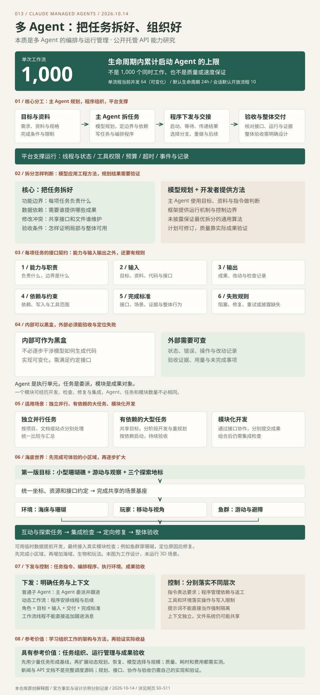

组织多个执行 Agent
托管 API 提供角色、工具、并行与阶段执行、结果交接、失败处理和运行观察。把大目标组织成可验收的工作。
能力与输入输出 →01 / 我们的核心理解
CLAUDE MANAGED AGENTS
主 Agent 规划并拆分任务，
按依赖组织执行、交接与验收。
核心是把任务拆好，把接口与完成标准说清。
适用于独立并行工作，也可组织大型项目与模块化开发。
传递结果 · 选择分支 · 组织阶段
用模型规划任务，用程序组织执行，用接口交接，用证据验收。
内部实现可以按黑盒使用；能力、输入、输出、依赖约束、完成标准和失败规则都要明确。
托管 API 提供角色、工具、并行与阶段执行、结果交接、失败处理和运行观察。把大目标组织成可验收的工作。
能力与输入输出 →主 Agent 结合资料与约束拆分任务、编写流程；后台程序安排线程和后续。各线程对话独立，文件共享，依赖与协作仍需管理。
两种组织方式 →减少持续分派、等待和汇总，把人的精力用于目标、判断与验收。最大参考价值在架构和管理方法，实际收益要通过任务比较。
对我们的意义 →研究流水线、RAG 证据整理、大型产品、模型路由、迁移、质量复核、运行看板与增量重跑。每种方向都需接口与验证。
八种扩展场景 →
02 / 定位与资料范围
研究对象是 Claude Managed Agents 及其动态工作流。它面向开发者提供可配置的执行框架和环境，适合持续时间较长的异步任务。[S1]
| 对象 | 提供什么 | 怎样看待 |
|---|---|---|
| MIXED 新闻文章 | 介绍动态工作流、规模、权限与预算边界 | 讨论入口，技术概述 |
| Claude Managed Agents | 托管 Agent 执行与多 Agent 编排能力 | 可通过 API 使用的服务 |
| 本次研究网页 | 解释机制，整理控制方法和自建参考 | 导读与教学模拟 |
文章没有提供一份完整的调度源码库，也不能据此将动态工作流归为 Claude Code 的内部功能。我们的研究依据是公开产品文档，不是底层调度代码审计。动态工作流于 2026 年 10 月 9 日进入 Beta；本页记录的是 2026 年 10 月 14 日核对到的行为。[S0][S10]
一个任务执行单元：模型、指令、上下文和可用工具共同决定它怎样工作。
为这些执行单元安排任务、顺序、依赖和结果交接。
在执行过程中记录状态、控制操作并处理异常，让任务能够结束或恢复。
03 / 两种组织方式
两种方式都能使用独立的对话上下文。区别在于谁负责组织后续工作。[S2]
由程序组织后续
程序收集各 Agent 的结果，再选择分支、循环和下一阶段；主线程可以继续与用户沟通。
流程中的 Agent 线程由程序管理，主 Agent 不能像普通子 Agent 那样逐个发送后续消息。
理解目标、判断如何拆分、为执行任务提供指令。方案质量受资料和判断能力影响。
并行启动、等待依赖、交接结果、按返回内容选择下一步。动态工作流的核心变化在这里。
提供线程、工具和事件；开发者读取进度、处理客户端工具与操作权限。
对话上下文独立，不等于文件和凭据独立。官方多 Agent 会话共享沙箱、文件系统和会话凭据；并行修改同一文件仍需设计协作规则。[S2]
固定脚本由开发者预先写好步骤；这里由 Claude 按当前任务生成编排程序。把规划交给模型可以增加适应性，也增加了验证生成方案的工作。我们自建时，可以先用固定调度器执行结构化任务，再逐步增加动态规划。
04 / 输入、输出与能力
目标、资料、Agent 配置
工具、约束和完成条件
拆分、分派、阶段协作
结果交接与异常处理
任务成果、状态事件
工具记录与用量
不同 Agent 分别处理资料或任务；能否提速取决于依赖和协调开销。
先收集各项结果，再交给后续步骤处理；可以按返回内容循环或选择分支。
文件操作、命令执行、网页检索和 MCP 工具扩展任务的操作范围。
通过事件读取阶段、线程状态和操作记录；失败处置需要工作流或应用明确处理。
能力依据：工作流运行 [S3] · 工具 [S11] · 线程管理 [S4]
不是 1,000 个同时工作。64 的并发值并非 API 的长期保证；失败重跑可新增线程，线程总数与累计启动 Agent 的计数也不完全相同。暂停仍计入生命周期，实际吞吐还受模型和组织限流影响。[S3]
05 / 控制能力与边界
“告诉模型怎么做”和“由程序强制限制”是不同层次。自建时应分别设计。
| 控制对象 | 可以做 | 边界 |
|---|---|---|
| 角色与候选 Agent | 配置模型、指令和工具；限制只使用预定义 Agent | 角色描述仍需具体输入、输出和完成条件 [S2] |
| 任务拆分与启动 | 在用户消息和系统指令中引导使用方式 | 动态流程是否启动由 Agent 判断；启动不经过工具权限策略 [S2] |
| 工具操作 | 自动允许、逐次询问，或由服务端评估调用 | 自定义工具由应用控制；自动评估不等于人工审批 [S5] |
| 进度与线程 | 查看状态、读取线程事件和工具记录 | 工作流线程不能按普通子 Agent 的方式追加指令 [S4] |
| 停止与恢复 | 向主 Agent 发消息要求停止或继续，并核对运行状态 | 中断主会话不会直接结束流程；需要确认结束事件 [S3] |
| 预算 | 创建会话时设预算，达到后暂停模型工作 | 在途请求可能造成超额；提高或移除预算可恢复因预算暂停的流程 [S6] |
运行结束也不等于成果合格。官方的 completed 表示编排程序运行完毕，仍可能有线程失败；应检查线程记录与验收证据。停止流程时，需要观察 workflow_run.status_ended，不能仅凭主会话空闲判断结束。[S3]
例如“每个项目独立研究”“最多复核两轮”。在托管动态流程里，这些是给模型的行为指引；不能直接当成确定执行的系统约束。
由调度器检查允许的 Agent、依赖、并发、写入范围和重试次数；由工具层执行权限检查。这是我们的自建设计建议。
06 / 核心：把任务拆好
主 Agent 根据目标、资料和指令决定如何分派，再编写工作流。公开资料没有披露能保证最优软件架构的通用拆分算法。我们可以向模型提供工程方法和约束，规划结果仍需检查。[S2]
提供需求、现有代码、资源范围、接口约定与完成条件。
确定阶段、任务边界、依赖与交付；资料不足时需要补充，设计不合理时需要重规划。
程序安排后续、交接结果；平台提供线程、事件与运行控制。
| 判断 | 要回答的问题 | 海底世界例子 |
|---|---|---|
| 功能边界 | 一项任务究竟负责哪种能力？ | 鱼群负责游动；环境负责海床、珊瑚和区域信息 |
| 数据依赖 | 启动与完成需要别人提供什么？ | 鱼群避障依赖环境的障碍物查询接口 |
| 修改冲突 | 哪些任务会同时修改共享文件或状态？ | 共享接口集中维护，模块分别提交改动 |
| 交付与验收 | 成果能否独立检查，组合后如何验证？ | 先检查鱼群，再把它接入场景检查与珊瑚的交互 |
任务粒度应能说明输入、结果和完成标准。把“开发鱼群”进一步明确为“实现移动接口并检查活动范围”，比只给一个角色名称更容易管理。
拆分后仍使用同一套世界规格、坐标、资源格式和接口版本。跨模块的问题交回规划或集成步骤处理，避免每个执行任务各自设计整个世界。
划分层次可以是“大目标 → 阶段 → 模块 → 可验收任务”。这是计划的层次，不等于创建无限嵌套的 Agent。拆分质量、交接信息与协调成本，比数量更值得检查。
07 / 接口与黑盒
从外部把执行 Agent 当作有明确职责的任务单元。能力、输入与输出是基础；还要说明依赖约束、完成标准和失败处理。以下是我们的任务契约设计。
例如鱼群游动与避障；明确任务边界和需要报告的问题。
目标、代码、规格、资源、接口与必要上下文；不要只给一个任务名称。
代码或文件、接口说明、改动记录、检查结果与未完成事项。
依赖哪些成果，可修改什么，能调用哪些工具，时间与重做范围是什么。
接口检查、场景运行、证据核查与整体体验。运行结束不是质量证明。
报告阻塞、补充资料、定向修复、有限重试或披露未覆盖内容。
主 Agent 不必逐步干涉每次推理和每一行代码。内部实现可以调整，只要仍满足约定的接口与检查条件。
记录工具操作、文件改动、检查结果、资源用量及剩余问题。不能仅凭“我完成了”确认任务成功。
Agent 是执行单元；任务是一次工作委派；模块是成果对象。一个鱼群模块可以经历开发、检查、修复和集成多个任务，执行 Agent 可以重用或替换。模型输出也可能变化，应核对每次实际成果。
08 / 下发与控制
先定义角色、模型与可用工具，再下发具体目标和上下文。执行 Agent 使用模型与工具读代码、修改文件、运行检查，提交成果供后续步骤处理。
| 字段 | 示例要求 |
|---|---|
| 目标 | 实现小型珊瑚礁区域内的鱼群游动和避障 |
| 输入 | 世界规格、米制坐标约定、环境查询接口、鱼模型资源 |
| 边界与依赖 | 维护鱼群模块；依赖场景基座与环境接口，共享接口有问题先报告 |
| 输出 | 可集成代码、接口说明、改动记录、检查结果与剩余问题 |
| 完成与失败 | 检查活动范围及避障；缺接口报告阻塞，检查失败定向修复 |
任务进入独立对话线程；主 Agent 读取报告后，可以发送后续任务并保留此前上下文。适合需要持续纠正和讨论的工作。[S2]
程序创建任务线程、传入指令并接收结果，再按分支安排下一步。主 Agent 不能逐个向工作流线程追加跟进消息。[S3]
| 层次 | 控制内容 | 如何判断落实 |
|---|---|---|
| 任务指令 | 职责、上下文、接口与交付要求 | 这是行为引导；读取实际结果核对是否遵守 |
| 编排程序 | 等待依赖、安排并行、限制返工和选择分支 | 查看计划与程序，检查异常情况能否按预期处理 |
| 工具与执行环境 | 允许的操作、参数和读写范围 | 需要真实的工具配置、写入检查或隔离措施 |
| 成果验收 | 代码可用性、证据、场景与集成行为 | 以运行检查和审阅结果决定完成，保留失败记录 |
“只修改鱼群目录”写在提示词里，不能直接视为强制隔离。服务器工具受权限策略控制；自定义工具由应用决定是否执行，可自行增加路径与参数检查。共享文件仍需协作规则。[S5]
官方运行过程中不直接展示生成的工作流代码；运行结束、主会话空闲后，可以要求主 Agent 打印当次编排程序，以研究这次任务怎样组织。该程序与平台底层调度器源码是不同层次。[S3]
09 / 大型任务与模块化开发
这是贴近实际开发的工作设计：先完成一个可自由游动、观察鱼群、找到三个地标的小型珊瑚礁区域，再扩展世界。以下交互只解释任务组织，采用固定教学数据，不生成或运行 3D 海底场景。
共同使用米制坐标、资源格式、环境查询、玩家状态与互动事件约定。让不同模块能够组合，再按体验与检查结果扩大范围。
主 Agent 应用工程方法形成计划，先固定第一版范围和共享规格。各模块等待输入。
先明确任务边界、输入输出与依赖，再决定并行范围。框架没有内置海底世界的最优拆分模板。
接口固定后，鱼群可先使用临时环境数据，任务界面可先使用模拟互动事件。待真实模块交付后必须重新检查组合行为，不能把各模块的局部通过当成整体验收。
教学例子假设鱼群错误转换了环境坐标单位，导致穿过珊瑚。定位到鱼群逻辑后保留其他成果，修正并重测联动；需要改共享接口时，再评估所有依赖任务。
一个大任务可产生多轮开发、检查、修复和扩展任务。任务数量、模块数量和 Agent 数量不必相同。真正的完成条件是可体验的整体成果，以及与目标对应的运行和检查记录。
10 / 交互理解
点击“下一步”观察流程。全部任务、证据和结果均为固定教学数据；不调用模型、不读取实际仓库，也不模拟官方 API 的精确事件。
研究三个候选项目。每个任务同时负责分析与实验，提交结论、依据和未验证事项。
| 任务 | 状态 | 交付与依据 |
|---|---|---|
| 项目 A | 待分派 | 等待任务定义 |
| 项目 B | 待分派 | 等待任务定义 |
| 项目 C | 待分派 | 等待任务定义 |
先约定输出和验收条件，防止最后只收到三段无法比较的摘要。
自建建议：每个 Agent 写自己的结果目录，最后由一个步骤汇总。不要让多个任务同时修改总索引。本例说明控制思路，不证明多 Agent 提高了真实研究质量。
可以为 001 长文写作、002 资料检索、007 模型判断与路由分别安排研究任务，统一提交来源、能力、证据与限制，再检查这些能力如何衔接。这里的 A/B/C 用于解释分派与验收；不是三个项目的真实模型运行记录。
11 / 使用场景
按项目、文档或站点拆分，分别处理，再统一比较与汇总。
统一目标后分阶段开发，任务按依赖启动，持续检查和重规划。
通过稳定接口协作，分别提交成果，再验证各模块组合后的行为。
每个项目独立分析和复现；统一比较能力、证据、依赖与使用边界。
每份资料提取研究条件和结果，再比较差异；保留原文位置以便核查。
按站点或文档处理独立问题，合并发现并设置整改优先级。
每个任务承担一个模块及其验证，最后统一检查接口与整体行为。
独立性、上下文与协作开销的判断参考 官方多 Agent 适用指南 [S9]；上述场景为我们的应用设想。
12 / 对我们的价值
对这个研究仓库，最有参考价值的是组织研究与保留证据的方法。减少人工操作的效果，需要在真实任务中测量。
目标源库、版本、能力、核心调用链、运行条件、实验和未验证事项。
按资料边界分派，尽量让分析与实验在同一任务里完成，减少信息交接。
源码是否支持结论？实验是否确实执行？未覆盖内容是否明确？
合并研究文档、比较表与网页说明，由单一步骤更新索引。
| 已有研究 | 可借鉴的部分 | 衔接时要补什么 |
|---|---|---|
| 002 · RAG | 检索历史资料与原文依据 | 来源权限、版本字段、引用格式与检索接口 |
| 007 · 模型路由 | 任务分类与判断标准 | 执行模型接入、能力测试与失败回退 |
| 001 · 长文写作 | 将核查后的材料组织为报告 | 证据传递、术语统一和最终编辑验收 |
组合是后续方向。现有项目不会自动组成完整系统；写出的报告长度、Agent 数量和相互认可次数，都不能替代证据与实际价值。
13 / 资料的深度
我们的判断：这篇新闻的技术深度有限；它的参考价值在能力与边界概述。官方文档能指导使用服务，但不能替代自建系统的完整实施方案。
| 资料 | 可以得到 | 尚需补充 |
|---|---|---|
| 新闻概述 | 知道功能和值得注意的限制 | 调用方法、实际验证与底层机制 |
| 官方 API 文档 | 配置、事件、权限与运行行为 | 自己的拆分标准、验收方案与故障测试 |
| 自建实现与实验 | 检查调度和交接，测量真实效果 | 持续维护、回归数据与部署运行经验 |
任务之间共享多少资料？交接丢了什么？增加 Agent 后遗漏减少了吗？
中断后如何恢复？重复执行会产生什么？失败结果是否被静默跳过？
核查时间、质量、延迟和费用一起比较，不能只看并发数。
从公开资料可借鉴设计分工；目前研究范围没有完整调度源码或服务实测。不能因为文章概述较浅，就推断底层实现简单；也不能因为支持很多 Agent，就认定存在更强的推理算法或更好的成果。
14 / 自建参考路线
以下是我们的设计建议，可以独立选择模型与工具。它不是 Anthropic 的 API 格式，也不是已实现的 Agent 系统。
保存目标、输入来源、依赖、输出格式、写入范围和验收标准。先用三个同类研究任务。
让模型提出结构化计划，程序检查后执行；程序限制并发、重试和可调用工具。
记录待执行、运行、待复核、完成、失败或取消。结果按任务独立存放，汇总前检查依赖和覆盖范围。
测试请求失败、证据缺失、重复执行和停止。恢复时检查已有成果，不把每次重试当成全新工作。
基础流程有收益后，再考虑模型选择、动态拆分、阶段重规划和生成编排程序。
| 组件 | 职责 | 完成标准 |
|---|---|---|
| 规划器 | 生成任务与依赖 | 输入输出明确，依赖没有循环，资源需求可接受 |
| 调度器 | 安排可执行任务 | 并发受控，未完成依赖不启动后续任务 |
| 执行 Agent | 调用模型和工具完成任务 | 只访问允许范围，输出带来源的结构化成果 |
| 状态与记录 | 保存进度、用量和异常 | 恢复后能识别已完成、失败及等待任务 |
| 验收与汇总 | 核对证据并组织最终成果 | 未验收结果不标成完成，遗漏必须显式列出 |
包含目标、依赖、并发、重试、输出路径和证据要求。示例字段需由你自己的程序实现。
历史资料检索、统一证据格式、独立工具权限、模型选择、运行看板、恢复记录，以及按项目维护研究版本。
明确任务边界与验收、单 Agent 基线、接口和数据格式、可观察的失败，以及能证明收益的任务集。
八种可扩展场景 · 我们的设计方向
以下以现有能力作为参考。需要自己接入模型、工具、状态和业务系统；本网页没有执行这些流程，也没有证明它们的收益。
| 场景与工作流程 | 输入 → 输出 | 需要新增什么 | 怎样判断值得用 |
|---|---|---|---|
| 01 · 批量项目研究 主 Agent 分派多个项目；各任务分析并复现，独立复核后统一汇总。 | 项目清单、固定版本、研究标准 → 带源码位置与实验记录的报告、比较表、网页。 | 统一研究格式、只读来源与独立实验目录、单一索引写入步骤、遗漏和失败清单。 | 同样的项目与标准，比较结论正确性、证据覆盖、人工核查时间与总费用。 |
| 02 · RAG 证据整理 检索资料并保留出处；执行任务利用证据回答，复核引用后形成报告。 | 问题、授权资料、来源版本 → 可追溯引用、回答及证据缺口。 | 参考 002 接入检索接口、版本与段落定位、来源权限、冲突证据处理；检索结果作为数据交接。 | 检查引用能否回到原文、遗漏是否减少、资料更新后能否正确修订。 |
| 03 · 大型产品与海底世界 统一规格与接口，先做基座，再按依赖开发模块；集成失败后定向修复。 | 最小交付、接口与资源约束 → 可运行版本、模块成果、集成检查与已知问题。 | 共享接口版本、模块目录归属、临时数据约定、代码集成与性能检查；一条受影响链路一个修复任务。 | 实际启动并检查整体行为；海底世界要能游动、看鱼群、找地标，不能只验收文件存在。 |
| 04 · 模型路由与专家分工 按任务特征选执行配置；检查结果，不合格时进入修订或备用模型。 | 任务类型、能力要求、预算 → 路由决定、任务成果、失败与回退记录。 | 参考 007 建立判断标准，接入模型，定义共同输出格式；用任务集测量能力与成本。 | 相同质量门槛下比较费用、延迟与失败率；角色名称不等于能力得到保证。 |
| 05 · 模块迁移与兼容改造 按边界迁移多个模块；保持共同接口，集中验证新旧行为与回退。 | 旧实现、目标接口、兼容要求 → 修改集、迁移记录、检查结果与回退方案。 | 隔离改动或明确写入归属、接口冻结、集成顺序、兼容样例；管理跨模块的依赖变化。 | 检查原有行为和目标行为、审阅改动、确认回退可执行，并披露未覆盖路径。 |
| 06 · 独立质量复核 生成、检查、修复分阶段；检查任务按固定标准验证成果，再决定是否接受。 | 成果、验收标准、原始依据 → 问题清单、可复现证据、修复结果或拒收原因。 | 可执行检查、独立证据来源、修订轮数上限、人工抽查；复核 Agent 的认可仍需依据。 | 比较漏检与误报、实际缺陷、修订费用及人工复核时间，避免只统计互相认可次数。 |
| 07 · 人工确认与运行看板 展示任务状态、产物、用量与待确认操作；人检查后继续、调整或停止。 | 线程与阶段事件、工具请求、用量 → 可追踪进度、确认记录、恢复或结束结果。 | 事件映射、任务与产物关联、权限界面、状态持久化；适配工作流的停止和预算恢复语义。 | 检查故障能否定位、待确认是否被正确处理、停止是否收到结束事件、恢复是否避免重复副作用。 |
| 08 · 版本更新与增量重跑 记录已研究版本，识别变化影响哪些任务；复用有效成果，只重跑受影响部分。 | 新旧版本、依赖图、已有成果 → 更新报告、差异证据、过期结论和新的验收记录。 | 版本标识、缓存有效性、任务幂等规则、检查点与重跑策略；持久状态由自己的系统落实。 | 验证未变化成果仍有效、受影响任务没有遗漏，中断恢复和重复运行没有产生重复改动。 |
这些方向可以组合：检索补资料、路由选执行配置、Agent 完成任务、检查决定是否接受、看板管理运行。先验证一个完整小流程，再决定是否扩大并发或增加动态规划。
15 / 价值验证
先定义完成标准，再分别运行单 Agent 与多 Agent。记录全部成果和失败，按相同标准核查。
结论是否能对应源码、原文或实验？引用是否支持结论？
研究问题是否全部回答？失败任务是否明确披露？
从收到成果到确认可用，人工花了多少时间？
记录总体耗时、模型用量、工具和运行费用，计入重试与汇总。
多 Agent 若搜索和输出更多内容，可能只是扩大了工作范围。公平比较时应固定研究问题、来源条件、验收标准和资源范围，并记录配置差异。首次试验后重复代表性任务，再决定是否扩大规模。
核对官方资料，整理讨论，制作静态网页与教学交互。
调用 Managed Agents、运行真实多 Agent 实验或验证成本和质量收益。
16 / 理解核对
是。完整地说，还包括结果交接、阶段组织、汇总和运行管理。核心价值在组织工作与持续执行。
这是主要问题之一，还要管理依赖、状态、权限、预算和失败。动态工作流由编排程序安排后续，主 Agent 不必每一步都主持交接。
新闻适合了解功能；官方资料可指导使用这项服务。自建时，文件协作、恢复、验收、模型适配和任务拆分仍需自己的实施方案与实验。
文章的技术深度有限；底层工程是否复杂不能由文章篇幅判断。可靠执行、有效拆分和价值评测值得研究，但本次资料没有给出完整实现。
可以参考公开的架构和行为，先实现结构化任务与固定调度，再补状态、权限、恢复和验收。不要把 API 使用示例当作完整调度源码。
不能保证。多个任务可能扩大覆盖，也可能重复资料、丢失交接信息和增加费用。需要以相同标准比较实际成果。
最大的参考价值在多 Agent 编排与运行管理的架构。1000 是单次工作流累计启动 Agent 的上限，不是同时工作数量，也不是质量或速度保证。可以先用少量任务验证收益。
主要由主模型结合目标、资料、指令与工程约束做规划。框架提供执行和管理机制；公开资料没有披露保证最优分解的通用算法。海底世界的拆分是我们的设计示例。
提供明确的任务、上下文、接口、交付和验收要求。普通子 Agent 由主 Agent 委派与跟进；动态工作流由程序安排线程和后续。工具权限、读写检查和集成验收需要真正落实。
还需要共同规格、依赖关系、共享接口与集成检查。海底世界先做基座，再按接口开发环境、玩家和鱼群，随后接入互动与任务；发现问题后修复受影响部分，再逐步扩大。
可以隐藏内部实现，但还要明确依赖约束、完成标准与失败规则。状态、错误、改动和验收证据应可检查；模型生成了结果，不等于成果已经合格。
Agent 是执行单元，任务是一次委派，模块是成果对象。一个模块可经历开发、检查、修复和集成多个任务；同一个 Agent 也可承担不同阶段。三者数量不必相同。
17 / 来源与研究范围
资料核对日期：2026-10-14（北京时间）。Managed Agents 仍为 Beta，文档和限制可能变化。未获取底层完整源码，研究 commit 与上游开源许可证保持为空；页面文字和示意图为本仓库整理，未复制上游代码或品牌素材。
2026-10-11 的新闻，用于提出问题；产品行为以官方资料为准。
我们借鉴多 Agent 的编排与运行管理方式；采用哪种架构、是否扩大规模，由自己的任务和验证结果决定。
回到核心理解 ↑